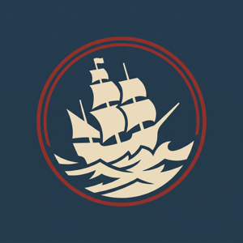

SHIPS AND STORMS
The ships that made history, and the storms, battles and mistakes that sank them.
Ships and Storms is a YouTube channel of naval and maritime history documentaries, from ancient galleys to the Second World War: great battles, shipwrecks, mutinies and voyages of discovery, and how the ships themselves were built and sailed. Every episode is researched from museums, historians and primary sources.
Watch on YouTube